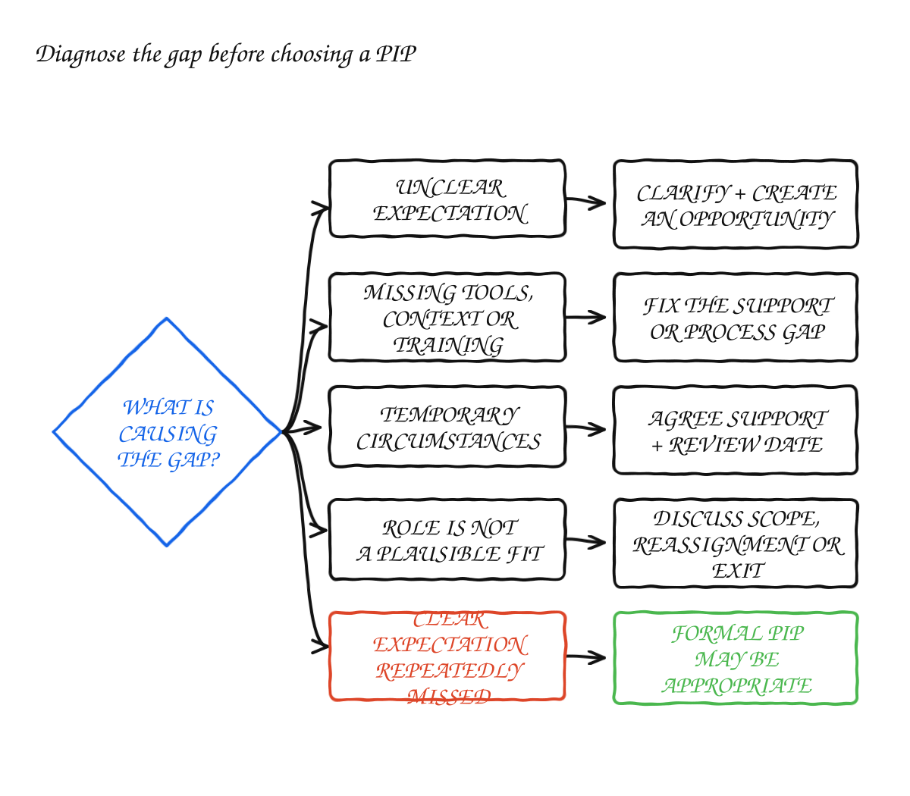
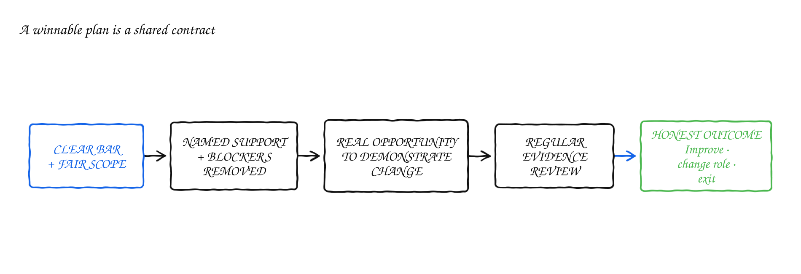

Make Improvement Plans Winnable—or Don't Pretend
I have a fairly simple view of performance improvement plans: the person must have a real chance of passing one.
This is the third article in my series about expectations, feedback and formal performance management. The first two covered the career ladder and regular feedback. A PIP comes later, after the bar was clear and the person had a fair opportunity to respond.
That sounds obvious, but I have seen plans begin after the organisation had already decided how they would end. The document still contained goals, dates and weekly check-ins. The employee was told that success was possible. Privately, the process was treated as evidence collection before an exit.
I would not call that performance management. It is an exit process dressed up in developmental language.
An improvement plan does not have to guarantee that the employee succeeds. It does have to make success realistically possible.
Start with diagnosis, not the template
I have seen the same label applied to completely different situations: a wrong hire, the wrong role, a missing capability, an expectation nobody explained, a personal crisis, unreliable attendance, or behaviour that did not change after repeated feedback.
A plan designed for one cause may be useless for another. Training will not repair a role that was poorly defined. A communication target will not close a deep technical gap. A short PIP cannot turn a promising junior hire into the senior engineer the organisation needed from the first day.
Before I start a formal plan, I ask:
What would need to change for this person to succeed, and is that change realistically within their control?
This does not remove accountability. It stops us putting all of it on the employee when the company helped create the problem.
| Likely cause | First response |
|---|---|
| The expectation was never defined | Clarify it and provide a fair opportunity to meet it |
| Knowledge, context or a runbook is missing | Train, document and observe another attempt |
| The role is a poor fit | Explore reassignment or a change in scope |
| Temporary personal circumstances affect work | Agree appropriate support, boundaries and a review date |
| A foundational hiring mismatch cannot close in a reasonable period | Handle role change or exit honestly |
| A clear expectation is repeatedly missed despite support | Consider a formal improvement plan |
| Reliability or conduct remains below an explicit bar | Use a formal plan where appropriate |

When hiring and role reality diverge
Sometimes the gap was there on the first day. I have seen interviews assess theoretical knowledge while the actual role required independent execution. I have also seen companies hire for potential, then put the person into work that needed proven experience from day one. Sometimes the job description simply did not match the job.
The employee is still accountable for what they represented during hiring. But the company is accountable for the assessment it chose and the role it offered. I don't think we get to ignore our half of that mistake.
An unwinnable plan asks the person to acquire in a few weeks what normally takes years of practice. It creates the appearance of fairness while postponing a decision.
I would rather ask three honest questions: Is there another role that fits the person's strengths? Can the gap close in a reasonable period? Can the company provide the support required? If all three answers are no, a direct role or exit discussion is clearer than a fictional development process. Reassignment is not always possible, and the available options depend on the organisation and employment context.
When the person is capable but the role is wrong
I have seen good engineers struggle in roles built around stakeholder management, ambiguity or influence across several teams. I have seen successful individual contributors discover that people management drains rather than motivates them. I have also seen managers held accountable for outcomes they did not have the authority to control.
In those cases, I want to test the fit with the role, not make a judgement about the person's overall worth.
Where the organisation can support it, I would consider narrowing the responsibilities for a period, assigning work that tests the capability in question, providing coaching or exploring a return to a previous path. Improvement in the current role is one successful outcome. Agreeing that a different role fits better can be another.
Career ladders should make these moves possible. When every change in scope is treated as failure, both managers and employees defend arrangements that no longer work.
When personal circumstances affect work
Illness, bereavement, caring responsibilities, burnout or serious disruption at home can affect performance. The manager should not diagnose the employee or demand private details. They do need to understand which commitments are realistic and whether the organisation can offer leave, flexibility, accommodation or temporary changes in scope.
A PIP is rarely my first response to a temporary personal crisis. But support still needs to be explicit. Undefined flexibility can leave the employee uncertain while colleagues quietly absorb the work without any plan.
I would agree what the temporary arrangement is, what needs to be communicated, which responsibilities will move and when we will review it. The options and the manager's obligations depend on company policy and local law, so People or HR should be involved early. This is not a place for a manager to improvise policy.
When the expectation was never clear
“Not operating at a senior level” is not an actionable gap. A career ladder provides the reference point, but the manager still has to translate it into the role: the decisions the employee should own, the work they should complete independently and the risks they should identify.
If the employee first hears that explanation inside the PIP, I think the manager has skipped a step.
Clarify the expectation, confirm the employee understands it and create a reasonable opportunity to demonstrate it. A serious formal process may still follow if the gap continues. It should not be used to introduce the bar retroactively.
When the person has reached the edge of their current capability
This is different from a wrong hire. The person may have performed well at their previous level and then struggled after a promotion or increase in scope.
A credible plan isolates the capability that matters. I would not paste the entire career ladder into a document and ask someone to improve generally.
For example, a newly senior engineer may deliver their own work but identify cross-team dependencies only after those dependencies become blockers. In that case, I would define the earlier behaviour I expected, give them a bounded project in which to demonstrate it, provide examples and review the decisions they made.
If the promotion happened too early, I would at least discuss a previous or narrower scope where that option exists. That is more honest than demanding that every gap close in 30 days simply because 30 days fits the process.
When someone is not reliably showing up
Repeated absence, missed commitments, unexplained unavailability and failure to communicate can become a performance problem. The issue is reliability, not visibility. A Slack status measures application activity, not whether colleagues can depend on the person.
If reliability is the gap, define reliability:
“Keep Slack open all day” rewards surveillance. I care about the commitments that let the team depend on someone, not whether their status stays green.
Write the plan in deliverables, not adjectives
In one plan I ran, a mid-level engineer had inconsistent delivery, low throughput and too much reliance on other people. I used a short, fixed window and a table with four columns: concern, specific improvement, expected outcome and current status.
The goals pointed to real work. A named, appropriately scoped deliverable had to be reviewed, tested and merged by a hard date. Technical reasoning had to move from informal private conversations into visible PR comments. I tracked progress against work artifacts rather than my impression.
“Appropriately scoped” needs agreement too. A manager can make a goal look measurable while setting a deliverable that depends on other teams, contains unresolved technical risk or is larger than comparable work. The employee should be able to challenge the scope before the clock starts.
The result was mixed. Some areas improved. Other commitments remained late, including one that missed an extended deadline. That was useful information. The plan measured what changed instead of trying to prove a verdict I had already reached.
The checklist I use is:

The duration should match the capability being tested. A reliability habit may become visible quickly. Strategic judgment or performance in a broader role needs repeated opportunities. A deadline can be precise and still be unreasonable.
At each review, I write down what improved, what remains below the bar, which evidence supports that view and what happens next. The final outcome should never be the first written assessment the employee receives during the plan.
The evidence should match the problem the plan is meant to address. Merged work may help assess delivery, but raw task counts can be gamed and ignore complexity. Fewer DMs may accompany stronger independence, but silence is not success. Meeting attendance may matter for reliability, but calendar presence is not impact.
The manager is part of the performance system
When I review a formal plan, I also review what the manager did before and during it.
Were expectations clear? Was feedback timely? Were examples documented when they happened? Did the employee receive work that allowed them to demonstrate the capability? Did the manager remove avoidable blockers? Was the conversation delayed because it was uncomfortable?
This does not cancel the employee's responsibility. It stops the organisation presenting every performance problem as an isolated personal failure.
If a manager allowed a serious gap to continue for six months without direct feedback, the employee may still be below the bar. Both things can be true: the employee has a performance problem, and the manager failed to manage it.
Say what process you are running
An improvement plan can end in recovery, reassignment, reduced scope or departure. I cannot promise the employee their preferred outcome. I can give them accurate information, support that matches the problem and a real opportunity to influence what happens next.
If improvement is possible, I define the route and help the person attempt it. If the role is wrong, I discuss the role. If the company made a hiring mistake, I expect us to acknowledge our part. If temporary circumstances require support, I don't disguise them as a capability problem.
And if the decision to end employment has already been made, do not call the remaining process an opportunity to improve. If I cannot explain what passing looks like and give the person a fair chance to get there, I should not pretend I am running an improvement process.